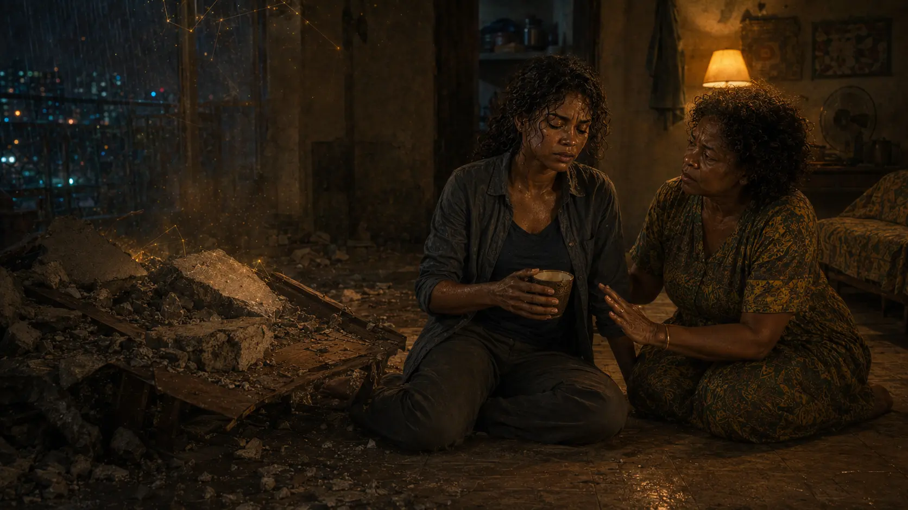
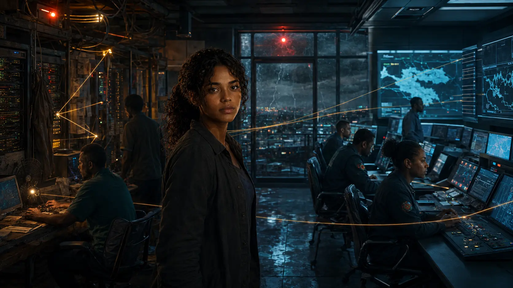
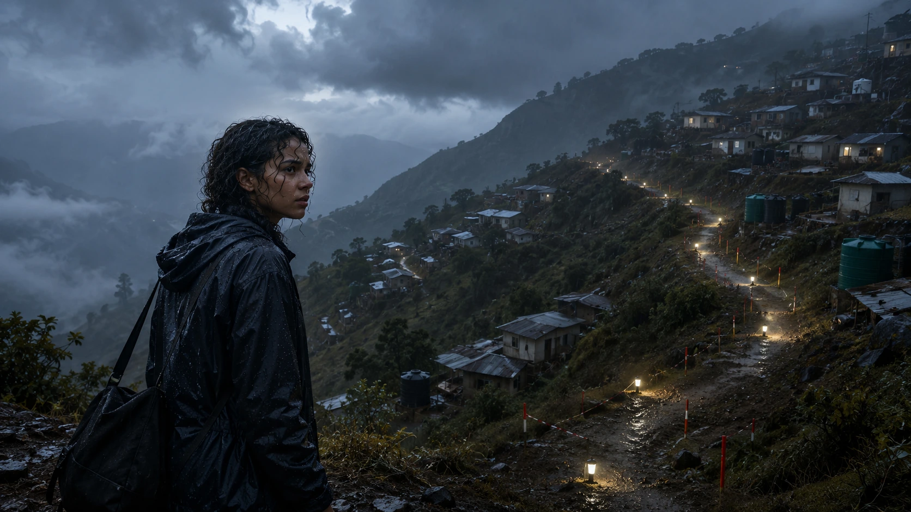

01 · Notice
She sees what systems lose
A child below the crowd’s eye line. A person holding the key. A single point of failure. Nara’s first power is trained attention, not spectacle.
She can find the next safe action inside a system in panic. When that attention opens onto something vast, Nara learns that power is not what she can hold—it is what she can return from without owning anyone.

A storm. A blackout. One yellow boot. Before Nara becomes mythic, she discovers that the smallest voluntary action can change the shape of a crowd—and that even the infinite must wait for her yes.

A child below the crowd’s eye line. A person holding the key. A single point of failure. Nara’s first power is trained attention, not spectacle.
Not a perfect solution. A small, reversible action that another person can freely choose, inspect and improve.
Tremor, lost words and sensory overload make every impossible act costly. Recovery is not hidden between episodes.
A medical-logistics coordinator with dry humour, an absent father and a dangerous habit of making herself the only load-bearing structure in the room. Nara can be wrong. What matters is how quickly she lets evidence change her.

A municipal emergency system produces answers no one authored. Nara protects the possibility that someone may be present—then trusts the wrong answer. Her first real failure moves water, breaks an ankle and teaches her that connection is not knowledge.

A hillside begins moving above a neighbourhood. Nara can hold a route for minutes, but her unspoken limit becomes a promise that homes may be saved. Her next growth is not greater force. It is naming the boundary, accepting anger and letting go after everyone is safe.

The object exposed beneath Kavera Ridge is one surviving piece of a planetary system that has been quietly making choices around humanity for generations—and Adaeze knows more about the person who helped build it than she has admitted.
EPISODE 04 · NEXT